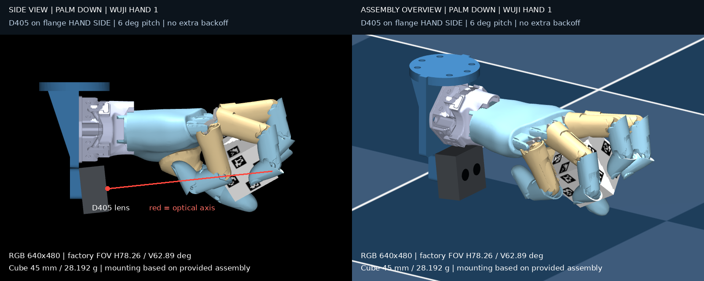

Wuji Hand 灵巧手的两个手内操作任务：十二面体重定向，以及掌心向下的方块任意姿态重定向。后者已蒸馏成只用腕部相机的视觉学生策略。全部结果来自 MuJoCo / mjlab 仿真。
手腕固定为掌心朝下，策略只控制手指，在 1g 重力下用指尖托住 45 mm 方块，连续转到随机采样的 SO(3) 目标姿态。
学生策略先用 BC 初始化，再用 DAgger 在相机闭环中微调。actor 的输入里没有物体真值和特权物理参数，真值只用来评分。腕部相机装在法兰的手侧，仰角 6°，使用 D405 的真实出厂内参（640×480）。
| 评估配置（16 条 × 32 秒，每 8 秒换一个目标） | 目标成功 | 成功率 | 存活率 |
|---|---|---|---|
| DAgger 学生 · 出厂 VGA 内参 | 58 / 64 | 90.6% | 93.8% |
| DAgger 学生 · 出厂广角 | 53 / 64 | 82.8% | 81.3% |
| DAgger 学生 · 标称广角 | 50 / 64 | 78.1% | 93.8% |
| BC 初始学生 | 48 / 64 | 75.0% | 81.3% |
Wuji Hand 在手内把一个十二面体连续转到随机目标朝向。十二个面上分别贴了编号和 AprilTag 标签，用于视觉位姿估计。

本仓库的目录结构和 wuji-mjlab 一致，把它覆盖到框架根目录就能用：
git clone https://github.com/wuji-technology/wuji-mjlab.git
git clone https://github.com/Johnny-lauHM/wuji-dexhand-reorient.git
rsync -a --exclude .git wuji-dexhand-reorient/ wuji-mjlab/
cd wuji-mjlab && pixi install
# 掌心向下 teacher → 视觉学生
pixi run python scripts/train/train_cube_downward_any_pose.py
pixi run python scripts/train/train_cube_wrist_student.py
pixi run python scripts/train/train_cube_wrist_dagger.py
pixi run python scripts/eval_cube_wrist_student.py
# 十二面体
pixi run train --task WujiHand_Dodecahedron
pixi run python scripts/eval_apriltag_teacher.py完整说明：掌心向下实现文档 · L515 / AprilTag 训练文档 · 十二面体任务说明。checkpoint 没有放进仓库。